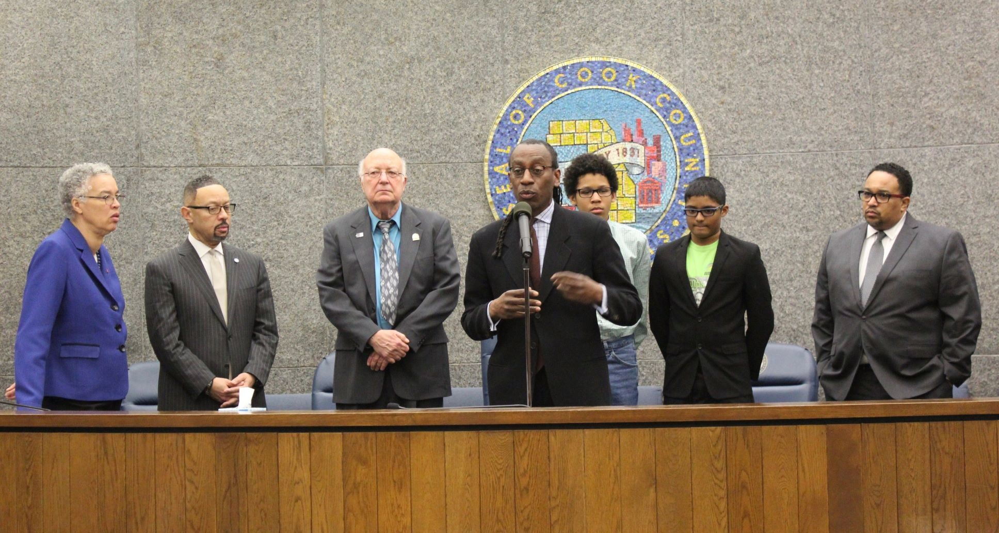

DJMP Institute deploys AI-powered intelligence monitoring to continuously scan developments in agentic AI, AI ethics, AI security, workforce equity, and grant opportunities — ensuring our programs and community are never behind the curve. Every entry below is researched, sourced, and framed through the lens of what it means for the communities we serve.
LinkedIn's Future of Work Fund provides financial grants and in-kind support for nonprofits preparing young adults for AI-driven careers through AI literacy, job access, workforce success, and system-level innovation. The fund specifically prioritizes organizations supporting career starters overcoming barriers to economic opportunity — which is DJMP Institute's defining mission. Most grants are anticipated to fall within the $200,000–$300,000 range. DJMP Institute meets every eligibility criterion: 501(c)(3) status, workforce development focus, AI innovation integration, and direct service to young adults facing systemic barriers. With PathwayAI operational, our Fortinet cybersecurity partnership delivering workforce credentials, and our Youth AI & STEM programs serving students across Chicagoland, DJMP Institute has exactly the track record LinkedIn's fund is designed to accelerate. Community partners and supporters who wish to provide a letter of support — please reach out to [email protected].
The March 2026 AI landscape has crossed a critical threshold. Gemini 3.1 Pro has reportedly doubled previous scores on advanced reasoning benchmarks, and Gartner now projects that 40% of enterprise applications will integrate task-specific AI agents by year's end — up from less than 5% in 2025. Industry analysts describe the shift as moving from experimentation to execution, with organizations that redesign workflows around agents outperforming those that merely layer AI onto existing systems. For DJMP Institute, this isn't a prediction — PathwayAI's three-agent architecture has been built on exactly this infrastructure since day one. The same autonomous agent model powering PathwayAI is the model every major enterprise is now racing to replicate. Bronzeville was ahead of the curve.
A new peer-reviewed study published this month in New Directions for Community Colleges finds that the AI-driven digital divide is more complex than access alone — encompassing disparities in AI-related skills and in the equitable outcomes of how AI systems are designed and applied. Meanwhile, sector research shows that while more than 80% of nonprofits now use some form of AI, only 10–24% have formal AI governance frameworks in place. The pattern is familiar: technology advances faster than the systems built to ensure everyone benefits from it. DJMP Institute's Trustworthy Civic AI Framework (TCAF) — four pillars: Secure by Architecture, Ethical by Design, Equitable by Intent, Scalable by Design — exists precisely to close that governance gap for the organizations and communities most at risk of being left behind again.
NSF has renamed and expanded its flagship cybersecurity scholarship program to the CyberAICorps Scholarship for Service — now funding up to $2.5 million per award to train professionals at the intersection of AI and cybersecurity. The program's premise is direct: adversaries are already using AI to automate attacks at machine speed, and the workforce defending against them must be trained in both disciplines simultaneously. StateTech reinforces this, reporting that attackers in 2026 are targeting both human trust and machine heuristics at once — requiring a unified approach to securing users and the AI tools they rely on. DJMP Institute's Fortinet Academic Partnership was built for exactly this convergence: training the next generation of cybersecurity professionals from Bronzeville, Englewood, and Austin — the communities that need this pipeline most and are mentioned in it least.
Two of the most significant AI grant programs in the nonprofit sector are now accepting applications. The AWS Imagine Grant 2026–2027 cycle opens this spring — a program that has awarded over $21 million to 180+ nonprofits, with 87% of this year's applicants already exploring AI use cases. Separately, Google.org's Impact Challenge: AI for Government Innovation is open now, offering $1M–$3M to nonprofits using agentic AI to transform public services — with applications evaluated on impact, innovative AI use, feasibility, and scalability. Both programs align directly with PathwayAI's architecture: autonomous AI agents connecting communities to publicly funded services. Full listings with deadlines, eligibility checklists, and application tips are available in the DJMP Grant Intelligence feed.
This month's wave of AI releases from OpenAI, Anthropic, and Google marks a turning point that DJMP Institute has been building toward since day one. GPT-5.4, Claude Sonnet 4.6, and Gemini 3.1 Pro all launched within weeks of each other — and the defining shift isn't that they got smarter. It's that they became more operational: capable of planning, acting, and verifying across long, complex workflows. Anthropic's Model Context Protocol (MCP) — described as a "USB-C for AI" connecting agents to external tools like databases, search engines, and APIs — has been donated to the Linux Foundation's new Agentic AI Foundation and is quickly becoming the open standard. PathwayAI's architecture is built on exactly this kind of federal API integration — connecting to ten public databases including Grants.gov, SAM.gov, and the Census Bureau. Experts now describe 2026 as the year agentic workflows finally move from demos into day-to-day practice. For DJMP Institute, that transition isn't a prediction — it's already underway in Bronzeville.
A Nonprofit Quarterly report puts into words what DJMP Institute has been building against for two decades: as AI transforms entire industries, ensuring marginalized groups can transition into stable, AI-powered careers is not just an economic necessity — it is a racial and social justice imperative. In February 2025 alone, more than 170,000 jobs were cut in the United States, with the burden falling hardest on communities with the fewest reskilling resources. AI literacy is quickly becoming a human right — just as digital literacy became essential in the 2000s, AI literacy is now a nonnegotiable skill for economic participation. A Penn State Dickinson Law researcher has proposed an "equity by design" framework, arguing that equality policies must be integrated throughout the AI lifecycle to minimize bias and promote justice for all. DJMP Institute's PathwayAI was designed with that principle at its foundation: built with community, not for community.
As agentic AI systems become operational infrastructure — not just chatbots — the cybersecurity stakes have fundamentally changed. OpenAI acknowledged this week that prompt injection attacks, where malicious instructions are hidden within web content to manipulate AI agents, represent a structural security risk that cannot be fully patched. Security experts warn that in 2026, attackers will exploit both human trust and machine heuristics — requiring a unified approach to securing both users and the AI tools they rely on. State and local governments are being urged to modernize security operations, build durable AI governance frameworks, and invest in continuous workforce training. That workforce has to come from somewhere. DJMP Institute's Fortinet-partnered cybersecurity training program is designed to ensure it comes from Bronzeville, Englewood, and Austin — not just the suburbs. The NSF has recognized this convergence, launching the CyberAI SFS program integrating AI into cybersecurity workforce development. DJMP Institute is proud to be ahead of this curve.
DJMP Institute founder and CEO Martin Pieters was among a select cohort of educators awarded the AWS-MLU micro-credential at the first-ever AWS Machine Learning University Spring AI/ML Research & Teaching Symposium held on a university campus — hosted by Tuskegee University on February 26–27, 2026. The two-day symposium brought together educators, Amazon professionals, and academic leaders from across 78 HBCUs and community colleges to advance AI/ML education and research. The event also formally launched the application cycle for the 2026–27 educator cohort. Martin's credential recognizes demonstrated proficiency in the AWS-MLU curriculum for developing advanced technologies and driving innovation in artificial intelligence and machine learning. City Colleges of Chicago — where Martin was a 20-year tenured faculty member in the mathematics and physical science department at Kennedy-King College — is a named participant in the AWS-MLU Educators Consortium.
DJMP Institute submitted PathwayAI to the Google.org Impact Challenge, requesting $1.5M to connect 500,000+ marginalized urban residents to publicly funded training resources across 25 cities nationwide over 36 months. PathwayAI uses autonomous AI agents to monitor, match, and deliver personalized resource pathways via SMS — meeting residents where they are, without requiring a smartphone or internet connection.
In 2017, Martin Pieters challenged youth in Rainbow PUSH Coalition's Saturday STEM program to build something real. The result: the Stay Safe App — a shooting heat map using Chicago city data and Google Maps to help CPS students navigate home safely. Led by Jonathan Key — biomedical engineer at IIT and Saturday Academy lead developer — and built by Donald Pieters (Martin's son), Krystopher Williams, Aidan Pieters (Martin's son), and unveiled at Rainbow PUSH's 46th Annual Convention. In that same program, from elementary school through Kenwood Academy, Akash Pondicherry — younger brother of DJMP Institute core staff member and first employee Raj Pondicherry — was growing up alongside Donald. Two classmates. Two families. One vision that became PathwayAI.
In February 2019, the Cook County Board passed a formal resolution recognizing the Rainbow PUSH Excel STEAM program. Martin Pieters brought two student researchers before the commissioners: Adam Simpkins, 13, and Akash Pondicherry, 15 — a Kenwood Academy sophomore and the younger brother of DJMP Institute core staff member and first employee Raj Pondicherry. Akash had been in the PUSH Excel program alongside Martin's sons Donald and Aidan Pieters since elementary school. The board chambers that day held, without knowing it, a founding story in progress. Covered by the Chicago Crusader.

In May 2017, Facebook executives traveled from Washington, D.C. to Rainbow PUSH Coalition headquarters on Chicago's South Side — summoned to address a crisis of violent content livestreamed on their platform targeting Chicago youth. Rev. Jesse Jackson and Cook County Commissioner Richard Boykin demanded real accountability. Martin Pieters was active in Rainbow PUSH's technology leadership at this moment. The meeting preceded Facebook's announcement of 3,000 new content review employees and targeted school workshops in Chicago. Long before AI ethics became a boardroom priority, the civil rights community was holding Big Tech accountable for harm in Black and brown neighborhoods — a tradition foundational to how DJMP Institute approaches responsible AI.
Fortinet, the global leader in enterprise cybersecurity, has joined DJMP Institute as an Official Academic Partner — integrating Fortinet's NSE certification curriculum into DJMP's youth cybersecurity programs. Students gain access to industry-recognized certifications aligned to the National Initiative for Cybersecurity Education (NICE) Cybersecurity Workforce Framework, building real credentials for in-demand careers.
Justis Walker, a DJMP Institute student from Lane Tech College Prep, was among 13 Chicago Public Schools students surprised with a $40,000 Amazon Future Engineer Scholarship — and one of 400 recipients nationwide. Walker, who planned to attend the University of Iowa to study computer science, credited his preparation and drive. The scholarship also includes a paid internship at Amazon after freshman year. Coverage in the Chicago Sun-Times and CBS Chicago highlighted Walker alongside fellow CPS scholars.
City Colleges of Chicago — where DJMP Institute founder Martin Pieters was a 20-year tenured faculty member in the mathematics and physical science department at Kennedy-King College — announced an enhanced collaboration with Amazon Web Services Machine Learning University. The initiative brings AI/ML bootcamps and open-source curriculum directly to CCC faculty, with Kennedy-King College named as a key delivery site for Chicago-area students.
Google's AI Principles outline the commitments guiding how they develop and deploy AI — prioritizing social benefit, avoiding harmful applications, accountability, and privacy. DJMP Institute's PathwayAI development is guided by these same responsible AI frameworks, ensuring our autonomous agents operate transparently and equitably for communities that have historically been harmed by algorithmic bias.
The Cybersecurity & Infrastructure Security Agency (CISA), alongside international partners, published joint guidelines for secure AI development — covering secure design, development, deployment, and operations. As DJMP Institute's PathwayAI and cybersecurity programs expand, these federal frameworks inform our approach to building AI systems that are secure by design.
Amazon Web Services launched the Machine Learning University Educator Enablement Program to bring the same AI/ML curriculum used to train Amazon's own engineers to faculty at HBCUs, community colleges, and minority-serving institutions — free of charge. The program now spans 78 institutions and has assisted more than 200 faculty members serving over 250,000 students in its inaugural year.
Stanford University's Human-Centered Artificial Intelligence Institute publishes the annual AI Index Report tracking AI's economic, social, and ethical dimensions. The report consistently highlights the gap between communities with AI access and those without — the exact divide DJMP Institute's PathwayAI and youth STEM programs are designed to close.
The National Institute of Standards and Technology's AI Risk Management Framework (AI RMF) provides a voluntary structure for organizations developing or deploying AI systems to manage risks around accuracy, reliability, safety, security, and bias. DJMP Institute references the AI RMF in the design of PathwayAI's governance architecture and in the cybersecurity curriculum delivered through our Fortinet Academic Partnership.
The application cycle for the AWS-MLU 2026–27 educator cohort was formally launched at the Tuskegee Symposium on February 27, 2026. Educators at community colleges, HBCUs, and minority-serving institutions are encouraged to apply. The program is free, provides bootcamp training, open-source AI/ML curriculum, and year-round professional development — based on the same curriculum Amazon uses to train its own engineers. DJMP Institute faculty are alumni of the 2025–26 cohort.
Eight years before PathwayAI, the intellectual DNA of DJMP Institute was already taking shape on the South Side of Chicago. Martin Pieters — then STEM Director at Rainbow PUSH Coalition — challenged his Saturday morning youth program participants to do something radical: use publicly available city data to solve a real problem facing their own community. The problem they chose wasn't abstract. It was survival. How do we get home safely?
The result was the Stay Safe App — a shooting heat map built from Chicago city data and Google Maps, designed to help CPS students navigate around areas recently affected by gun violence. The app was led by Jonathan Key, then a biomedical engineer at the Illinois Institute of Technology, who guided the Saturday Academy students through the technical build. It was unveiled at the Rainbow PUSH Coalition's 46th Annual International Convention at the Hilton Chicago and covered by ABC7 Chicago and the Chicago Sun-Times. The app wasn't a class project. It was civic AI before civic AI had a name.
That lineage is not coincidence. It is continuity. PathwayAI is the Stay Safe App grown up — more powerful, more scalable, and built for 500,000+ residents across 25 cities. But the question it asks is identical to the one those teenagers asked in 2017: How do we use data to protect the people systems have left behind?
DJMP Institute founder and CEO Martin Pieters was among a select cohort of educators awarded the AWS-MLU micro-credential at the first-ever AWS Machine Learning University Spring AI/ML Research & Teaching Symposium — hosted by Tuskegee University on February 26–27, 2026. The event formally launched the 2026–27 educator cohort application cycle. City Colleges of Chicago — where Martin was a 20-year tenured faculty member at Kennedy-King College — is a named participant in the AWS-MLU Consortium.
In 2017, Martin Pieters challenged youth in Rainbow PUSH Coalition's Saturday STEM program to build something real. The result: the Stay Safe App — a shooting heat map using Chicago city data and Google Maps to help CPS students navigate home safely. Led by Jonathan Key — biomedical engineer at IIT and Saturday Academy lead developer — and built by Donald Pieters (Martin's son), Krystopher Williams, Aidan Pieters (Martin's son), and unveiled at Rainbow PUSH's 46th Annual Convention. In that same program, from elementary school through Kenwood Academy, Akash Pondicherry — younger brother of DJMP Institute core staff member and first employee Raj Pondicherry — was growing up alongside Donald. Two classmates. Two families. One vision that became PathwayAI.
In February 2019, the Cook County Board passed a formal resolution recognizing the Rainbow PUSH Excel STEAM program. Martin Pieters brought two student researchers before the commissioners: Adam Simpkins, 13, and Akash Pondicherry, 15 — a Kenwood Academy sophomore and the younger brother of DJMP Institute core staff member and first employee Raj Pondicherry. Akash had been in the PUSH Excel program alongside Martin's sons Donald and Aidan Pieters since elementary school. The board chambers that day held, without knowing it, a founding story in progress. Covered by the Chicago Crusader.
$1.5M request to connect 500,000+ marginalized residents to publicly funded training resources across 25 cities over 36 months using autonomous AI agents.
Fortinet's NSE certification curriculum integrated into DJMP youth cybersecurity programs, providing industry-recognized credentials aligned to NICE Workforce Framework.
Walker, from Lane Tech College Prep, was among 400 national recipients of the Amazon Future Engineer Scholarship — one of 13 CPS students honored. Coverage in the Chicago Sun-Times and CBS Chicago.
City Colleges of Chicago — including Kennedy-King College where DJMP's Martin Pieters was a 20-year tenured faculty member — was named a participant in the AWS Machine Learning University Educators Consortium, bringing advanced AI/ML training to Chicago community college faculty and students.
Gartner projects that 40% of enterprise applications will integrate task-specific AI agents by year's end — up from less than 5% in 2025. Gemini 3.1 Pro has reportedly doubled benchmark scores, and industry analysts describe 2026 as the year agentic AI moves from experimentation to execution. Organizations redesigning workflows around agents are outperforming those layering AI onto legacy systems. PathwayAI's three-agent architecture was built on exactly this infrastructure from day one. Bronzeville was ahead of the curve.
This month's wave of AI releases from OpenAI, Anthropic, and Google marks a turning point that DJMP Institute has been building toward since day one. GPT-5.4, Claude Sonnet 4.6, and Gemini 3.1 Pro all launched within weeks of each other — and the defining shift isn't that they got smarter. It's that they became more operational: capable of planning, acting, and verifying across long, complex workflows. Anthropic's Model Context Protocol (MCP) — a "USB-C for AI" connecting agents to external tools like databases, search engines, and APIs — has been donated to the Linux Foundation's new Agentic AI Foundation and is quickly becoming the open standard. PathwayAI's architecture is built on exactly this kind of federal API integration — connecting to ten public databases including Grants.gov, SAM.gov, and the Census Bureau. Experts now describe 2026 as the year agentic workflows finally move from demos into day-to-day practice. For DJMP Institute, that transition isn't a prediction — it's already underway in Bronzeville.
Amazon Web Services launched the Machine Learning University Educator Enablement Program for faculty at HBCUs, community colleges, and MSIs — free, based on Amazon's internal engineer training curriculum, and now spanning 78 institutions serving 250,000+ students.
The 2026–27 application cycle was launched at the Tuskegee Symposium on February 27, 2026. Free program for educators at community colleges, HBCUs, and MSIs. DJMP faculty are 2025–26 cohort alumni.
Tuskegee University — host of the 2026 AWS-MLU Symposium — expanded its AI curriculum through the MLU-EEP, integrating large language models and cloud AI tools into courses. Tuskegee's cybersecurity program was ranked #2 nationally in 2024 by Cybersecurity Guide.
Stanford's Human-Centered AI Institute tracks AI's growing impact on equity — including which communities benefit and which are left behind. The data reinforces DJMP Institute's mission: the AI opportunity gap is real, measurable, and urgent.
A new peer-reviewed study in New Directions for Community Colleges (2026) finds the AI-driven digital divide is multifaceted — encompassing disparities in AI skills and in how AI systems are designed, not just who has internet access. Meanwhile, only 10–24% of nonprofits have formal AI governance frameworks in place despite more than 80% using AI in some form. DJMP Institute's Trustworthy Civic AI Framework (TCAF) exists precisely to close that governance gap for organizations and communities most at risk of being left behind again.
A Nonprofit Quarterly report puts into words what DJMP Institute has been building against for two decades: as AI transforms entire industries, ensuring marginalized groups can transition into stable, AI-powered careers is not just an economic necessity — it is a racial and social justice imperative. In February 2025 alone, more than 170,000 jobs were cut in the United States, with the burden falling hardest on communities with the fewest reskilling resources. AI literacy is quickly becoming a human right — just as digital literacy became essential in the 2000s, AI literacy is now a nonnegotiable skill for economic participation. A Penn State Dickinson Law researcher has proposed an "equity by design" framework, arguing that equality policies must be integrated throughout the AI lifecycle to minimize bias and promote justice for all. DJMP Institute's PathwayAI was designed with that principle at its foundation: built with community, not for community.
In May 2017, Facebook executives traveled from Washington, D.C. to Rainbow PUSH Coalition headquarters on Chicago's South Side — summoned to address a crisis of violent content livestreamed on their platform, including attacks on Chicago youth. Rev. Jesse Jackson and Cook County Commissioner Richard Boykin met with the company's outreach and policy leads, calling for a real accountability partnership. Martin Pieters was active in Rainbow PUSH's technology leadership at this moment, working at the intersection of Big Tech, civil rights, and community safety. The meeting — covered by ABC7 Chicago — preceded Facebook's announcement of 3,000 new content review employees and targeted school workshops in Chicago. Long before AI ethics became a boardroom priority, the civil rights community was demanding that technology companies account for the harm their platforms caused in Black and brown neighborhoods. That civic AI accountability tradition is foundational to how DJMP Institute approaches responsible AI today.
Google's AI Principles — covering social benefit, accountability, safety, and bias avoidance — guide how responsible AI systems should be built. DJMP Institute's PathwayAI design reflects these principles, ensuring autonomous agents serve communities equitably and transparently.
The NIST AI RMF provides a voluntary structure for managing AI risk across accuracy, reliability, safety, security, and bias. DJMP Institute references this framework in PathwayAI's governance architecture and cybersecurity education curriculum.
The Biden Administration's landmark AI Executive Order established federal standards for AI safety and security, equity protections in AI use by government agencies, and requirements for transparency. These standards shape the policy context in which DJMP Institute's PathwayAI — designed for government resource navigation — operates.
Stanford's annual AI Index documents the state of AI equity — where progress is happening and where communities are being left behind. Required reading for any organization building AI for social impact.
NSF has renamed and expanded its flagship cybersecurity scholarship program to CyberAICorps Scholarship for Service — now funding up to $2.5 million per award to train professionals at the intersection of AI and cybersecurity. The premise: adversaries are already using AI to automate attacks at machine speed, and defenders must be trained in both disciplines simultaneously. StateTech reports attackers in 2026 target both human trust and machine heuristics at once — requiring unified security across users and AI tools. DJMP Institute's Fortinet Academic Partnership was built for exactly this convergence — training the next generation from Bronzeville, Englewood, and Austin.
LinkedIn's Future of Work Fund provides financial grants and in-kind support for nonprofits preparing young adults for AI-driven careers through AI literacy, job access, and workforce success. Most grants are anticipated to fall within the $200,000–$300,000 range. DJMP Institute's Fortinet cybersecurity partnership, PathwayAI, and Youth AI & STEM programs across Chicagoland make us a direct fit. Community partners who wish to provide a letter of support — please reach out to [email protected].
As agentic AI systems become operational infrastructure — not just chatbots — the cybersecurity stakes have fundamentally changed. OpenAI acknowledged this week that prompt injection attacks, where malicious instructions are hidden within web content to manipulate AI agents, represent a structural security risk that cannot be fully patched. Security experts warn that in 2026, attackers will exploit both human trust and machine heuristics — requiring a unified approach to securing both users and the AI tools they rely on. State and local governments are being urged to modernize security operations, build durable AI governance frameworks, and invest in continuous workforce training. That workforce has to come from somewhere. DJMP Institute's Fortinet-partnered cybersecurity training program is designed to ensure it comes from Bronzeville, Englewood, and Austin — not just the suburbs. The NSF has recognized this convergence, launching the CyberAI SFS program integrating AI into cybersecurity workforce development. DJMP Institute is proud to be ahead of this curve.
CISA and international partners published joint guidelines covering secure design, development, deployment, and operations of AI systems. DJMP Institute references these guidelines in the architecture of PathwayAI and in cybersecurity curriculum delivered through our Fortinet Academic Partnership.
The NIST AI RMF addresses the intersection of AI and cybersecurity — including adversarial threats, data poisoning, model evasion, and systemic risks in AI-powered systems. DJMP Institute integrates these risk concepts into our youth cybersecurity programs.
Fortinet — DJMP Institute's Official Academic Cybersecurity Partner — deploys AI across its threat detection, response, and security operations platforms. The intersection of AI and cybersecurity is central to DJMP's educational programming, from youth certifications through advanced AI security training.
The NSA and CISA's joint advisory on the most dangerous cybersecurity misconfigurations affecting government and enterprise networks underscores the critical need for a trained cybersecurity workforce at every level — exactly what DJMP Institute's youth cybersecurity pipeline is designed to build.
Every week DJMP Institute's research team scans federal databases, private foundations, and corporate giving programs — filtering every opportunity through the lens of AI equity, workforce development, and civic technology. Subscribers receive curated grant listings with deadline alerts, eligibility checklists, and application tips written specifically for nonprofits doing this work.
One grant is available free below. The full weekly feed — including active federal, foundation, and corporate opportunities — is available to subscribers and report buyers on the Grant Intelligence page.
Get Full Access →Nonprofits preparing young adults for AI-driven careers through AI literacy, job access, and workforce success. 501(c)(3) required. DJMP Institute submitted our application March 15, 2026. This is the only grant listing available without a subscription — subscribe to unlock all active opportunities.
DJMP Institute's Grant Intelligence research is available for partnership — white-labeled for your audience, co-branded in research reports, and open to joint grant applications where our PathwayAI infrastructure and your community relationships create a stronger proposal than either organization could submit alone. Partners also receive early access to listings before public release. If your mission overlaps with AI equity, workforce development, or civic technology, there may be a grant out there with both our names on it.